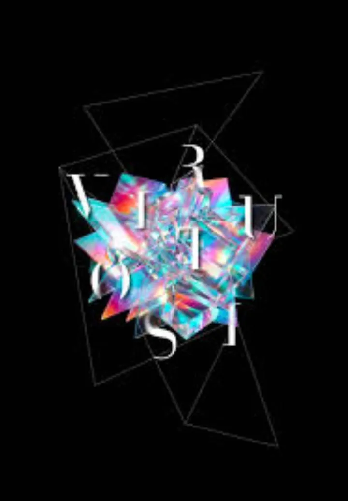

da dom 11 ott a gio 6 mag
I Virtuosi Italiani
I Virtuosi Italiani rinnovano la loro preziosa proposta musicale nella XXVIII Stagione Concertistica .
 Indicazioni
Indicazioni
- Costi e prenotazioni
- Costo non indicato · Prenotazione non indicata
- Programma
- Programma da verificare. Apri la fonte ufficiale per orari e possibili aggiornamenti.
- In caso di maltempo
- Nessuna indicazione specifica pubblicata.
- Note
- Acquisito automaticamente dalla fonte.
L’EVENTO
Descrizione completa
I Virtuosi Italiani rinnovano la loro preziosa proposta musicale nella XXVIII Stagione Concertistica .
Il ricchissimo cartellone offre un programma che celebra la bellezza attraverso i secoli , un percorso dove la grande tradizione classica dialoga senza filtri con il jazz, il cinema, la danza e il contemporaneo, mantenendo una grande attenzione ai giovani Talenti e agli interpreti iconici protagonisti della scena musicale internazionale.
Dall’eccellenza barocca alle sperimentazioni contemporanee, la Stagione 2026-2027 ribadisce quella vocazione all’innovazione e alla qualità artistica che pone l’ensemble veronese tra le formazioni più attive e stimate nel panorama musicale internazionale.
Gli appuntamenti sono suddivisi in tre percorsi concertistici paralleli ma allo stesso tempo collegati e coerenti, contraddistinti da una ricerca che attraversa epoche, repertori e linguaggi differenti.
I concerti della Stagione Principale sono affiancati dalle proposte musicali dei 6 Concerti della domenica , pensati per offrire un’occasione diversa di ascolto, immersi nella luce e nel raccoglimento della mattina, e dei Concerti cameristici del lunedì .
I concerti si terranno in due luoghi simbolo della cultura veronese : la magnifica cornice della ex Chiesa di S. Pietro in Monastero in Via Garibaldi 3 e la sede del Teatro Ristori, uno dei teatri storici della città di Verona.
IL PROGRAMMA
Programma e orari
Appuntamenti raccolti dalle fonti elencate. Dove manca un orario, non è ancora disponibile in questa scheda.
Programma pubblicato
- 2026-10-11 — 2027-05-06 ·
INFORMAZIONI UTILI
Prima di partire
- Controllare la fonte prima di partire.
ORGANIZZAZIONE